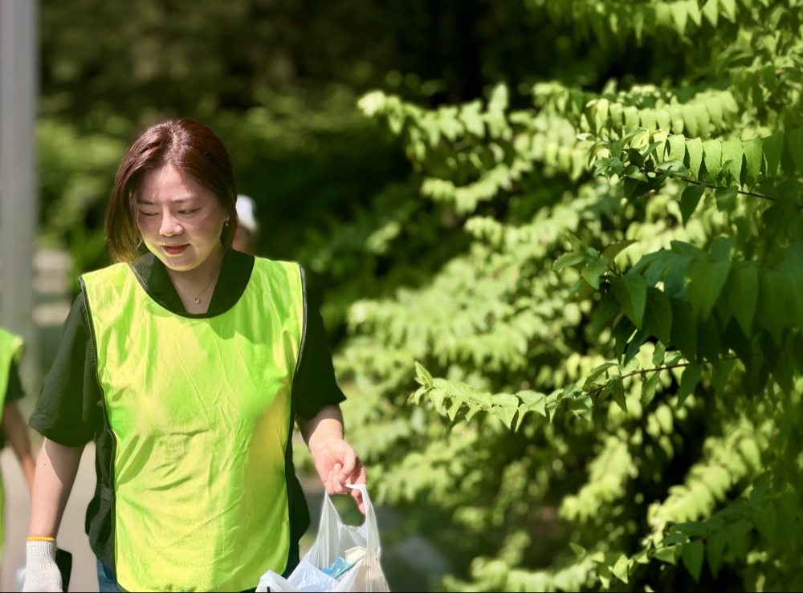
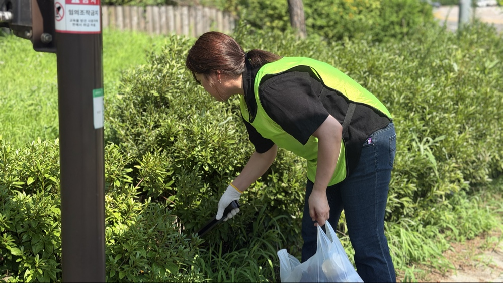
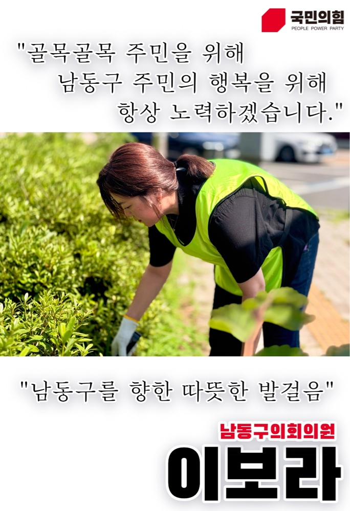

엄마의 마음으로
골목골목 주민을 위해,
골목골목 주민을 위해,
남동구의 새로운 심장.
인천광역시 남동구의회 기획행정위원회 이보라

98%
민원 처리율
12건
조례 발의
100%
현장 출석
Official Support
10만원 전액 세액공제
이보라의 든든한 후원자가 되어주세요!
깨끗한 정치, 남동구를 향한 따뜻한 발걸음에 함께해 주세요.
신한은행
예금주: 남동구의회의원이보라후원회
100-038-919010
세제 혜택 & 영수증 발급
• 10만 원까지: 연말정산 시 전액(100%) 세액공제 환급
• 10만 원 초과분: 15% 세액공제 (개인 연간 최대 100만원 한도)
• 영수증 신청: 성함/주민번호를 010-4849-1410 문자로 전송
온라인 민원 접수 365
구민의 소중한 의견을 이보라 의원이 직접 확인합니다
Core Promises
실시간 이행 지표
1. 안심 통학로 & 과밀학급 개선
85%
스쿨존 바닥신호등 확충 및 등하교 안전도우미 확대 배치
2. 남동형 효도정치 실천
90%
홀몸 어르신 안부망 및 경로당 냉난방비 보조 전폭 지원
3. 기후취약계층 기후돌봄 조례
발의 완료
폭염·혹한기 취약가구 냉난방 바우처 및 안심숙소 법제화
4. 골목상권 & 광역 대중교통망
70%
골목형 상점가 지정 확대 및 서창 광역버스 노선 증차 촉구
Field Activity
현장 중심 의정
풀뿌리 생활정치2026.08.20
골목골목 쾌적한 남동구, 환경정화 플로깅 활동
주민들이 자주 오가는 통학로 및 화단 일대를 직접 정비하며 현장의 목소리를 청취했습니다.

효도정치 실천
광복절 맞이 홀몸 어르신 반찬 나눔
만성중학교에서 밑반찬을 정성껏 조리해 관내 어르신들께 전달했습니다.